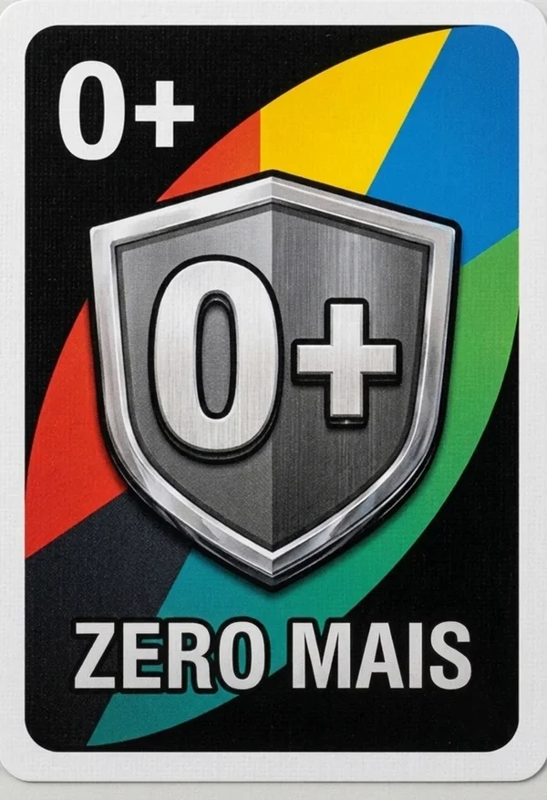
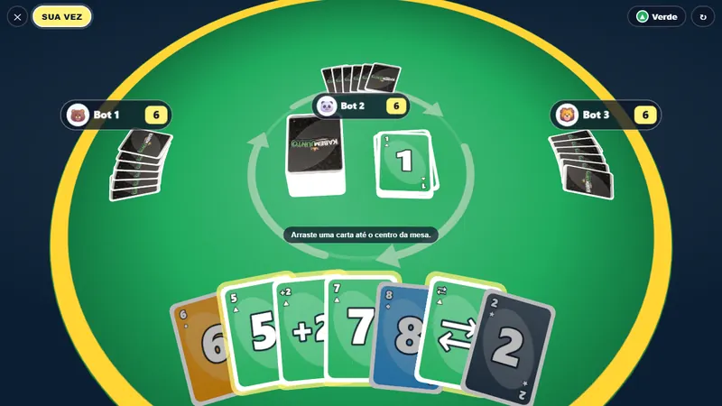
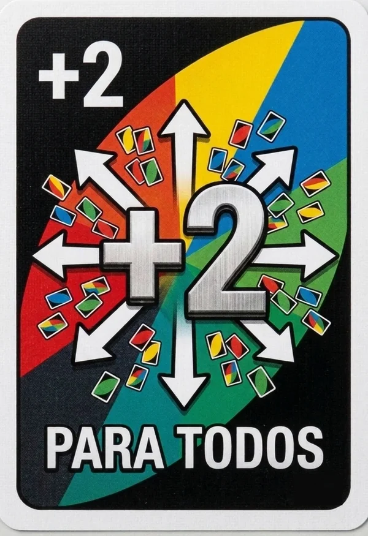
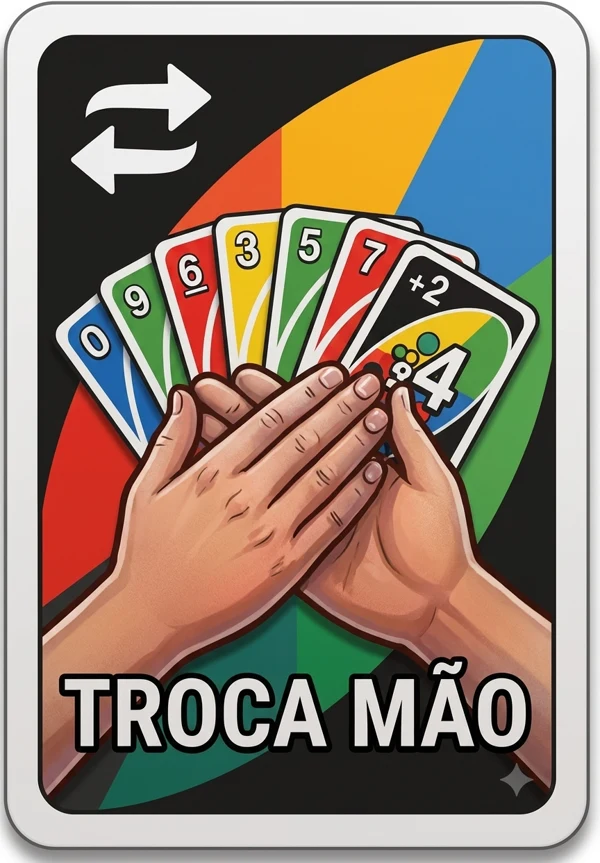
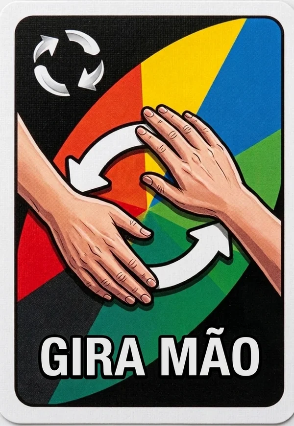
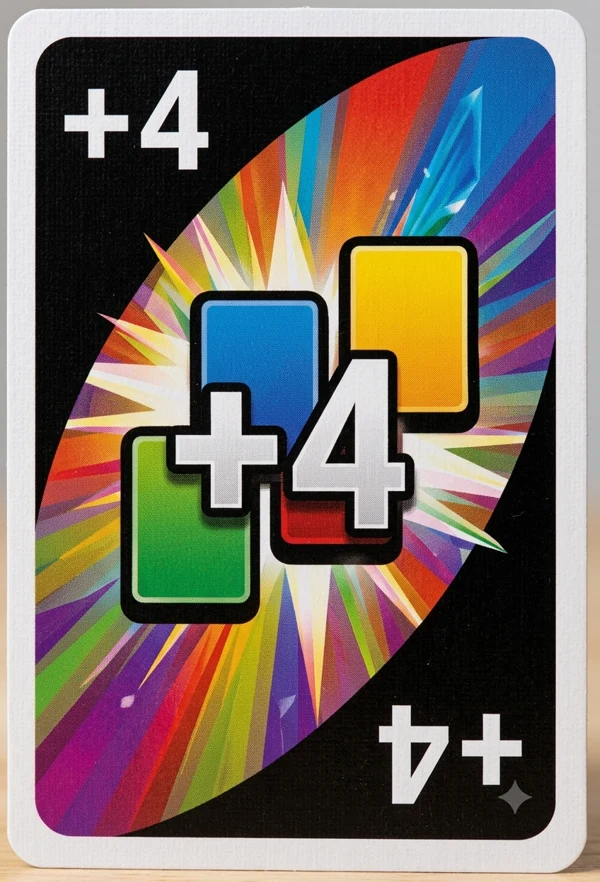
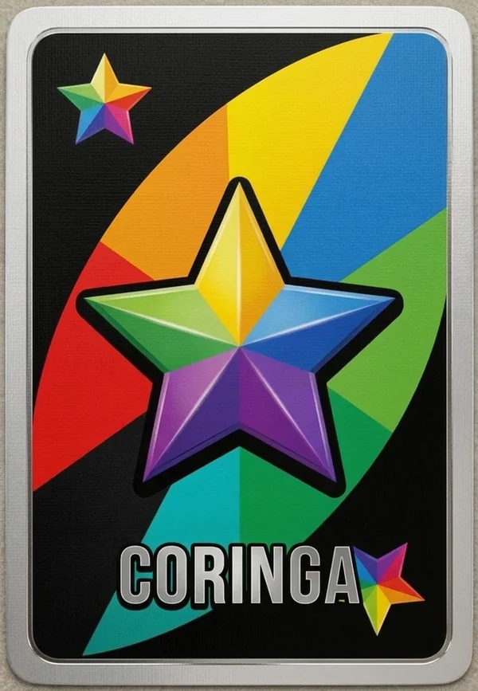

1 carta única
0+ Zero Mais
Devolve toda a pilha de ataque acumulado para o último atacante, sem defesa. Sem ataque ativo, escolhe a cor.

Cartas · 2 a 10 jogadores
O jogo de cartas que te denuncia. Reúna de 2 a 10 pessoas na mesma mesa 3D pelo navegador, sem cadastro e sem baixar nada.
Por que vira caos
Online
O 7 tem face comum, sem ícone especial. Quando cai na mesa online, abre o silêncio até a próxima carta: quem mandar mensagem ou fala rápida no chat compra +2 na hora.
Reviravolta
Recebeu uma pilha acumulada de +2 e +4? Jogue o 0+ Zero Mais para devolver tudo ao último atacante, sem direito a defesa.
Fora da vez
Tem uma carta idêntica (mesma cor e mesmo número ou ação) à que acabou de cair? Arraste antes do anel acabar para cortar a frente fora da vez.
Combos
Junte duas ou mais cartas da mesma face para jogar de uma vez. Nos ataques, +2 soma com +2 e +4 cobre +2 ou +4, mas +2 sobre +4 é proibido.
Baralho de 109 cartas

1 carta única
Devolve toda a pilha de ataque acumulado para o último atacante, sem defesa. Sem ataque ativo, escolhe a cor.

1 carta
Todos os adversários compram 2 cartas na hora, sem defesa ou repasse. Quem jogou escolhe a cor.

1 carta
Escolha qualquer adversário na mesa e troque todas as suas cartas pelas dele.

1 carta
Todas as mãos da mesa passam para o jogador ao lado no sentido atual da rodada.

4 cartas
Obriga o próximo a comprar 4 cartas (ou empilhar outro +4 / devolver com 0+ Zero Mais) e define a nova cor.

1 carta
Muda a cor ativa da mesa na hora que você precisar.
Sem manual longo
| Ação | Como fazer na mesa |
|---|---|
| Jogar carta | Arraste a carta que brilha até o centro (ou toque 2×) |
| Descarte múltiplo | Toque nas cartas da mesma face e jogue o grupo |
| Comprar | Toque no monte central |
| Corta-Frente | Arraste a carta idêntica enquanto o anel gira |
Online e offline
Perguntas frequentes
Não. O Kabemjunto abre direto no navegador do celular ou PC, sem cadastro. Para jogar offline contra bots, você pode instalar como PWA pelo menu do navegador.
De 2 a 10 jogadores na mesma partida, seja online com amigos, na mesa pública rápida ou contra bots no seu aparelho.
Não. O jogo não acessa seu microfone. No modo online, a Regra do 7 monitora o chat escrito e as falas rápidas dentro da sala: quem enviar mensagem durante o silêncio compra +2 cartas.
Não. O acúmulo é assimétrico: +2 acumula com +2 e +4 cobre +2 ou +4, mas +2 sobre +4 é proibido. Para devolver um +4, só com outro +4 ou com o 0+ Zero Mais.
Sim. Além da Mesa 3D carregada sob demanda, o jogo conta com uma Mesa 2D embutida com as mesmas regras e interações.